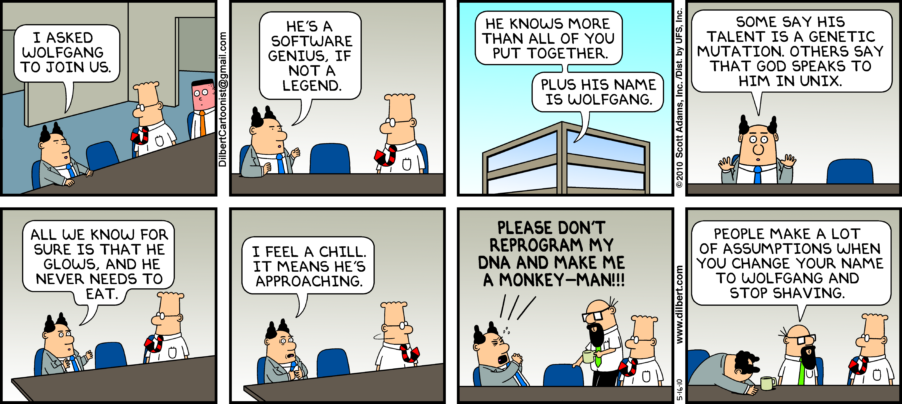
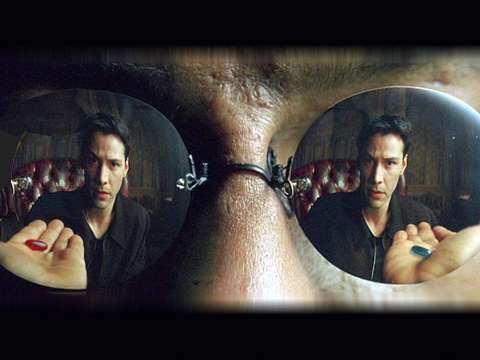
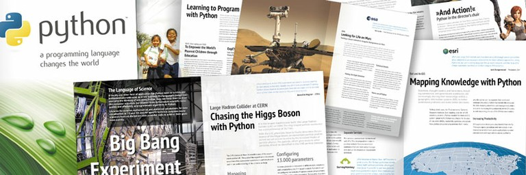
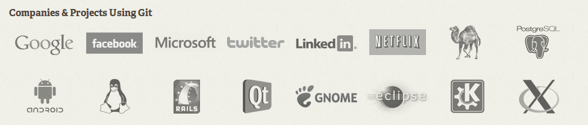

Cyber Security
Overview and Tools of the Trade
Built with reveal.js
Who am I?
I consider myself an experimental computer scientist, and work primarily on distributed systems and cloud computing.

Contact, Website
Open source course materials: https://github.com/theonewolf/cmu-sams13-cyber-security
Poll 0
- Who are you/your background?
- First pick?
- What do you expect to learn?
Project/Class Format
I have a syllabus, but it is completely up to you.
Meta-Lesson 1: Attacking
| 1 | Overview and Tools of the Trade |
| 2 | Passwords, Hashing, Rainbow Tables, and Cracking |
| 3 | Hands-On Cracking and Experimental Setup |
| 4 | Viruses, Backdoors, and Stealing What's not Yours |
| 5 | Networking Terms, Tools, and Attacks |
Meta-Lesson 2: Defending
| 6 | Defense Against the Dark Arts: Tools |
| 7 | Probability Review, Machine Learning (Weak AI) |
| 8 | Bayesian Classification Review: Parameter Estimation |
| 9 | Bayesian Classification Review: Decisions |
| 10 | Calculating Accuracy, and Analyzing Black Boxes |
Meta-Lesson 3: Cryptography
| 11 | Introduction to Cryptography: Perfect Cryptography |
| 12 | Diffie-Hellman Key Exchange |
| 13 | Applied Public-Key Cryptography |
| 14 | The Last Lecture |
| 15 | Buffer (July 4 or final day off) |
Do you take the blue pill or the red pill?
Your answer should be both!
If you know the enemy and know yourself, you need not fear the result of a hundred battles. If you know yourself but not the enemy, for every victory gained you will also suffer a defeat. If you know neither the enemy nor yourself, you will succumb in every battle
- Sun Tzu, The Art of War
Yes, war
Petraeus said cyber threats may soon rank alongside terrorist threats as top challenges to our security. He also noted the implications of the IT revolution for the Agency, highlighting initiatives in the areas of digital identity and big data.

But, it's also fun!
- How to take control of another computer
- How to infiltrate computer systems
- How to coordinate thousands of 'bots'
- How to intercept digital communications
- How to crack passwords
White, black, and grey hats...
Goal: become a white hat hacker
You must learn the techniques of a black hat hacker, if only to test your own defenses.
High Expectations
Of you
And, by extension, of me
We will:
- Learn, hack and defend against each other
- Learn and program in Python
- Learn version control with Git
- Learn the fish shell
- Use tools like Dropbox and Github to collaborate
- Have fun
We will move fast!
I expect you to keep up.
Poll 1
- Linux
- Programming
- Hacking
- Shell scripting
- Dropbox
- Github
- Python
Laptop Time
user: wolf
password: sams2013
Why Python?
You can also read the brochure.
Python makes programming easy, and fun to learn.
Pseudocode on Quicksort from Wikipedia:
function quicksort('array')
if length('array') ≤ 1
return 'array' // an array of zero or one elements is already sorted
select and remove a pivot element 'pivot' from 'array'
create empty lists 'less' and 'greater'
for each 'x' in 'array'
if 'x' ≤ 'pivot' then append 'x' to 'less'
else append 'x' to 'greater'
return concatenate(quicksort('less'), list('pivot'), quicksort('greater')) // two recursive calls
In Python:
def quicksort(array):
if len(array) <= 1:
return array
pivot = array[len(array)/2]; del array[len(array)/2]
less = []; greater = []
for x in array:
if x <= pivot: less.append(x)
else: greater.append(x)
return quicksort(less) + [pivot] + quicksort(greater)
Why Git?
Git is a version control system.
Record each change + reason with a commit
Use it for yourself, and as a log for others
There are free courses teaching git online
Like git, there are many courses on Python free online.
We will try Python Monk, but I suggest you check out Udacity CS 101 as well.
Bored? Well, you're also learning skills for a future job. Self-trained, motivated IT staff sometimes get jobs even without college degrees.
Don't forget! If you aren't bored, you could make a talk or poster about this class!